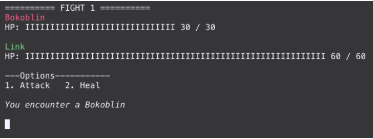

Projet « GATE-OF-HYRULE »
Développement d’un jeux tour par tour sur le thème de "The legends of Zelda" sous langage BASH.
Ce projet a été développpé dans le cadre de ma formation au sein de l'ETNA à la suite des cours dispensés concernant le langage BASH. Les notions devant être évaluées étaient les suivantes :
- Traiter les problématiques de développement de jeux
- Gérer les entrées des utilisateurs et leur gestion des erreurs
- Création d'un script
- Créer un gameplay autour de fonctions algorithmiques et mathématique
La première partie du projet ne comprenait que le BaseGame qui faisant intervenir un seul personnage et un seul ennemie jusqu'au match n°9 :
- Link
- Bokoblin
Aussi, les seules commandes possible étaient "Attack" et "Heal"
A partir du tour 10, le match change pour affronter le boss. Pour ce qui est du BaseGame, le seul boss disponible est Ganon
Dans la seconde partie du projet, il a été question d'améliorer le jeu avec des personnages, ennemies et boss supplémentaires, choisi aléatoirement. A la fin de cette étapes, 11 ennemies, 7 boss et 5 personnages ont été ajoutés au jeu.
Pour finaliser le projet, deux options de combat ont été ajoutées:
- Protect : Divise l'attaque de lancée par l'ennemie par 2.
- Escape : Permet de fuire le combat, la partie recommence alors au début du jeu.
Ci-dessous le rendu final du projet :